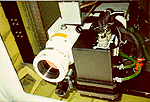

P.I.(s): James R. Irons -- NASA/Goddard Space Flight Center
Co-I(s): Phillip Dabney -- NASA/GSFC; J. Martonchik -- NASA/JPL; K. Jon Ranson -- NASA/GSFC; Charles Walthall, Carol Russell -- Univ. of Maryland
Objectives: To obtain multi-angle, high spectral resolution reflectance data of important forest components of a boreal landscape and relate these data to biophysical states (albedo, FPAR, leaf area index). The Advanced Solid State Array (ASAS) system was flown over representative sites in BOREAS to acquire the data. Radiative transfer models are being used in combination with the multi-angle data to develop algorithms for biophysical parameter estimation.
 The NASA C-130, housing the ASAS instrument |  The ASAS instrument, sticking out of the belly of the C-130 |
Check the ASAS Web site for more information.
Objectives:
Study bidirectional reflectance properties of snow background, and boreal forest canopies through seasons. Simulate MISR data by acquiring data at MISR view zenith angles.
Equipment Used and Data Collected:
Multiangle, hyperspectral digital image data, at-sensor radiance for 62 spectral channels (404-1025 nm) in up to 10 view angles for FFC-T data and up to 8 view angles for IFCs 1-3 data.
| Southern Site | Coverage by Date | # Flight Lines | GMT Range (start times) | Northern Site | Coverage by Date | # Flight Lines | GMT Range (start times) | |
|---|---|---|---|---|---|---|---|---|
| SSA-OBS | 4/19/94 5/31/94 6/01/94 6/06/94 7/21/94 9/13/94 | 3 3 3 3 3 3 | 17:11-17:35 17:16-17:38 14:47-15:07 15:32-15:57 18:46-19:11 17:31-17:59 | NSA-OBS | 4/20/94 6/07/94 8/04/94 9/06/94 9/17/94 | 3 3 3 1 3 | 17:17-17:54 16:04-16:41 16:23-16:14 * 16:08 17:13-17:35 | |
| SSA-OA | 4/19/94 5/31/94 7/21/94 9/16/94 | 3 3 3 3 | 18:43-19:08 15:29-15:59 17:46-18:17 17:10-17:40 | NSA-OA | 6/08/94 9/06/94 9/17/94 | 3 2 3 | 17:09-17:29 15:39-15:54 15:57-16:16 | |
| SSA-OJP | 4/19/94 5/31/94 6/01/94 6/04/94 7/21/94 7/24/94 9/13/94 | 3 3 3 3 3 3 3 | 17:57-18:28 16:25-17:02 15:20-15:41 14:48-15:11 19:24-19:49 16:33-16:58 18:09-18:32 | NSA-OJP | 4/20/94 6/07/94 8/04/94 9/17/94 | 3 3 3 3 | 17:32-18:22 15:25-15:52 16:47-17:10 * 16:30-17:04 | |
| SSA-YJP | 6/01/94 7/21/94 9/13/94 | 3 3 3 | 15:52-16:14 19:59-20:22 19:17-19:50 | NSA-YJP | 4/20/94 6/07/94 9/17/94 | 3 3 3 | 18:30-18:58 17:30-17:55 18:14-18:52 | |
| SSA-Fen | 6/04/94 6/06/94 7/21/94 7/24/94 9/13/94 | 3 3 3 3 3 | 15:32-15:57 16:12-16:35 20:35-21:10 15:57-16:23 18:43-18:53 | NSA-Fen | 4/20/94 6/07/94 9/17/94 | 3 3 3 | 19:10-19:35 16:54-17:17 17:44-18:05 | |
| SSA-YA | 7/23/94 7/24/94 | 1 3 | 15:48 17:08-17:33 | * means there was smoke obscuring the target site. | ||||
| AVIRIS-Cal | 5/26/94 7/23/94 9/16/94 | 1 1 2 | 17:25 16:20 20:01-20:12 | |||||
| Candle Lake | 5/31/94 9/16/94 | 1 1 | 16:08 ? | |||||
Known Problems and Caveats:
Compared to limited ground measurements, ASAS agreed very well with the ground observations for wavelengths 490-870 nm. Below 490 nm and above 870 nm, ASAS reflectance factors fell below the response observed by ground sensors. USE CAUTION working with spectral channels below 490 nm or above 870 nm, due to low signal-to-noise ratios and uncertainty in the absolute radiometric calibration.
RSS Overview || RSS-1 | RSS-2 | RSS-3 | RSS-4 | RSS-5 | RSS-6 | RSS-7 | RSS-8 | RSS-9 | RSS-10
RSS-11 | RSS-12 | RSS-13 | RSS-14 | RSS-15 | RSS-16 | RSS-17 | RSS-18 | RSS-19 | RSS-20
 Send a data request to the BOREAS Data Manager (BOREAS Investigators only)
Send a data request to the BOREAS Data Manager (BOREAS Investigators only)
E-Mail a comment on this page to the curator 
Send e-mail to Jaime Nickeson, the BORIS representative for the RSS group
Return to the RSS Overview
Return to the BOREAS Science Groups Overview
Return to the BOREAS Home Page
Last Updated: October 21, 1997
{kind=link}